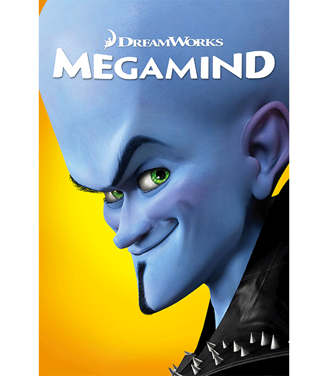

Pembukaan
Megamind adalah film animasi 3D yang bertema komedi dan superhero. Film ini diproduksi oleh DreamWorks Animation dan Red Jam Productions, dan didistribusikan oleh Paramount Pictures. Film ini dirilis di Indonesia pada tanggal 5 November 2010. Pengisi suaranya antara lain Will Ferrell, Tina Fey, Jonah Hill, David Cross, Brad Pitt dan Ben Stiller. Film ini disutradarai oleh Tom McGrath.
Balik Ke Atas